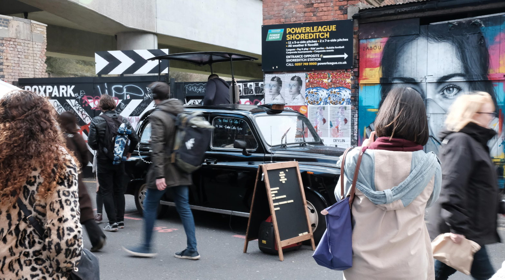
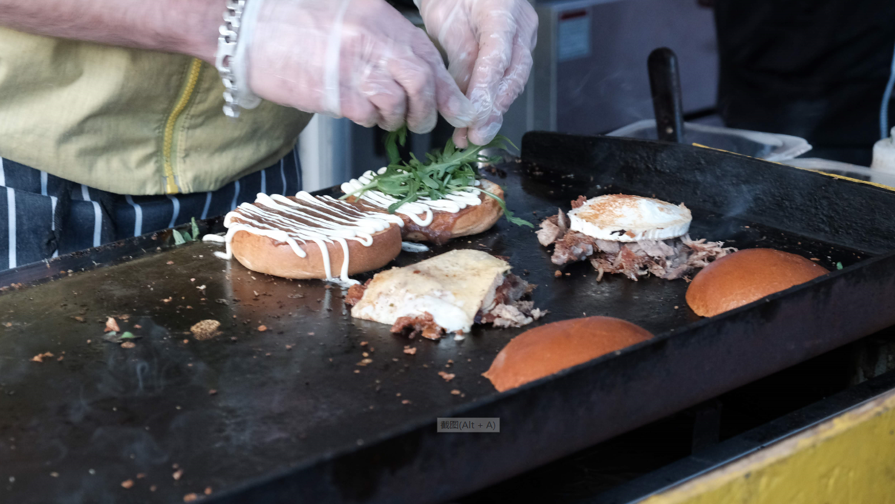
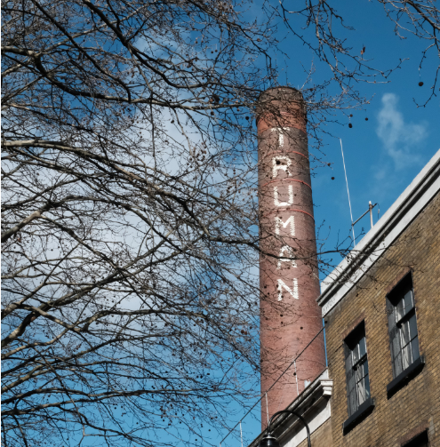
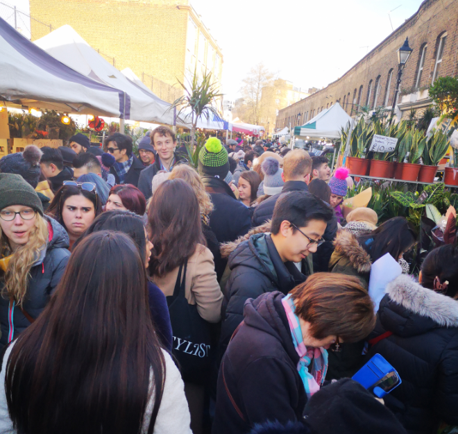

从伦敦回来几个月了，要说伦敦最令我着迷的是什么，除了七八月十点不落的太阳，三四区连排而立的花园房，应该以各式各样的市场为重了。
我早些年最爱的市场是东伦敦颇具特色的Brick Lane，每周日这里还会有充满各国风情的美食一条街。 平日里走过这里，会看到每次路过都发生变化的快闪店，豪车云集的时装现场，高挑的模特们带着很mean的眼妆一一走上台阶，进入复古的小门。

he Boiler House Food Hall是砖巷区域一栋仓库建筑，现在是室内的小吃市场。但我更爱周末的小吃一条街。 来自世界各地的小摊汇集于此。曾经的我大学时深夜躲在被子里听着毛不易的深夜一角泪流满面，歌词娓娓道来 “深夜的小摊，借一丝温暖。” 无比怀念同年时那充满烟火气的夜市，烧烤，油炸，甘蔗汁……而这些也能在这里看到，虽然不开放在深夜，食物也非来自中国各地而是世界各地，或许不合许多国人口感，但砖巷街头文化嬉皮士的风格，中古店和网红小吃的共存也足以让我得到欣慰了。 如果吃饱了，还能在旁边的公园里和朋友回到童年，玩跷跷板，蹦床，再走去不远处的小农场，逗逗马，吓吓鸡。

这是我最最最最爱的一个摊铺！ 店主是法国人，如果你去法国，一定要试试法国的鸭肉。我在b站看到有人拍了这个鸭肉汉堡的视频，可以看视频解解馋啦。

一个名为TRUMAN的建筑，仿佛置身于楚门的世界。
每个周日，伦敦哥伦比亚花市会成为最热闹的地方之一（作为数据专业学生我决定严谨一点）。 他就在Brick Lane的附近，你大可以早上七点起来喝一杯咖啡，来这里选最新鲜的花，当然捕蝇草这样可爱又危险的植物也可以在这里买到，很受欢迎的。 川流不息的人们在狭窄的街巷里穿行，因为过于拥挤而高高举起手中的鲜花或相机。 我国广东每年春节都有逛花市的民俗，所以来自广东的朋友们没到春节前都会来这里选一些鲜花，当然也可以是棉花来装饰自己的小屋子。

（未完待续 还有很多想写 但今天有些累了